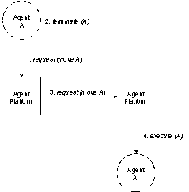
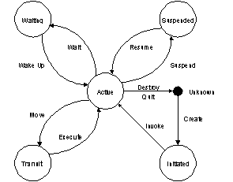
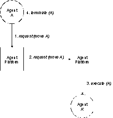
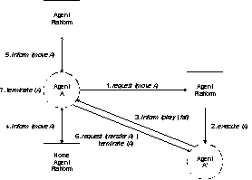
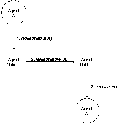
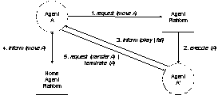
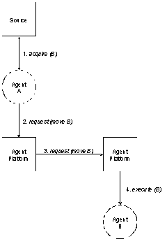
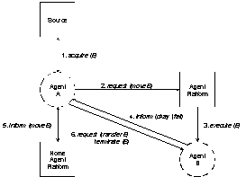
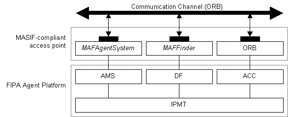

FOUNDATION FOR INTELLIGENT PHYSICAL AGENTS
FIPA 98 Specification
Part 11
Agent Management Support for Mobility
Obsolete
Publication date : 23rd October 1998
© 1998 FIPA - Foundation for Intelligent Physical Agents
Geneva, Switzerland
|
Notice |
|
Use of the technologies described in this specification may infringe patents, copyrights or other intellectual property rights of FIPA Members and non-members. Nothing in this specification should be construed as granting permission to use any of the technologies described. Anyone planning to make use of technology covered by the intellectual property rights of others should first obtain permission from the holder(s) of the rights. FIPA strongly encourages anyone implementing any part of this specification to determine first whether part(s) sought to be implemented are covered by the intellectual property of others, and, if so, to obtain appropriate licenses or other permission from the holder(s) of such intellectual property prior to implementation. This FIPA ’98 Specification is subject to change without notice. Neither FIPA nor any of its Members accept any responsibility whatsoever for damages or liability, direct or consequential, which may result from the use of this specification. |
Contents
1. Scope................................................................................................................................................................ 3
2. Normative References.......................................................................................................................................... 3
3. Symbols............................................................................................................................................................ 3
4. Terms and Definitions.......................................................................................................................................... 3
5. Overview............................................................................................................................................................. 3
6. Relation to Other FIPA Specifications................................................................................................................... 3
7. Mobility and Advanced Management Actions......................................................................................................... 3
7.1. Reference Model........................................................................................................................................... 3
7.2. Actions Supported........................................................................................................................................ 3
7.3. Agent Profiles............................................................................................................................................... 3
7.4. Action Descriptions....................................................................................................................................... 3
7.4.1. move..................................................................................................................................................... 3
7.4.2. transfer.................................................................................................................................................. 3
8. Mobility Ontology................................................................................................................................................ 3
8.1. fipa-mobile-agent-description.......................................................................................................................... 3
8.2. fipa-mobile-agent-profile................................................................................................................................. 3
8.3. fipa-mobile-agent-system............................................................................................................................... 3
8.4. fipa-mobile-agent-language............................................................................................................................. 3
8.5. fipa-mobile-agent-os...................................................................................................................................... 3
9. Mobility Life-Cycle............................................................................................................................................... 3
10. Mobility Protocols............................................................................................................................................. 3
10.1. Agent Migration........................................................................................................................................... 3
10.2. Agent Cloning............................................................................................................................................. 3
10.3. Agent Invocation.......................................................................................................................................... 3
Annex A (Informative): Integration of FIPA and MASIF Mobility Support Proposal.......................................................... 3
Foreword
The Foundation for Intelligent Physical Agents (FIPA) is a non-profit association registered in Geneva, Switzerland. FIPA’s purpose is to promote the success of emerging agent-based applications, services and equipment. This goal is pursued by making available in a timely manner, internationally agreed specifications that maximise interoperability across agent-based applications, services and equipment. This is realised through the open international collaboration of member organisations, which are companies and universities active in the agent field. FIPA intends to make the results of its activities available to all interested parties and to contribute the results of its activities to appropriate formal standards bodies.
This specification has been developed through direct involvement of the FIPA membership. The 48 members of FIPA (October 1998) represent 13 countries world-wide.
Membership in FIPA is open to any corporation and individual firm, partnership, governmental body or international organisation without restriction. By joining FIPA each member declares himself individually and collectively committed to open competition in the development of agent-based applications, services and equipment. Associate Member status is usually chosen by those entities who want to be members of FIPA without using the right to influence the precise content of the specifications through voting.
The members are not restricted in any way from designing, developing, marketing and/or procuring agent-based applications, services and equipment. Members are not bound to implement or use specific agent-based standards, recommendations and FIPA specifications by virtue of their participation in FIPA.
This specification is published as FIPA 98 specifications ver 1.0. All these parts have undergone an intense review by members as well as non-members during the past year as preliminary versions have been available on the FIPA web site. FIPA members as well as many non-members have been conducting validation trials of the FIPA 97 specification during 1998 and will continue to subject the new output to further validation during the coming months. During 1999 FIPA will publish revised versions of the current specifications and is also planning to continue work on further specifications of agent based technology.
Introduction
The FIPA specifications represent the primary output of FIPA. It is important to appreciate that these specifications have been derived from examining requirements on agent technology posed by specific industrial applications chosen by FIPA so far, and described in Parts 4, 5, 6, and 7 of the FIPA 97 specifications.
FIPA specifies the interfaces of the different components in the environment with which an agent can interact, i.e. humans, other agents, non-agent software and the physical world. FIPA produces two kinds of specifications:
· normative specifications mandating the external behavior of an agent and ensuring interoperability with other FIPA-specified subsystems;
· informative specifications of applications providing guidance to industry on the use of FIPA technologies.
In October 1997, FIPA released its first set of specifications, called FIPA 97, Version 1.0. During 1998, comments on this specification were received. Based upon these comments, parts of FIPA 97 were superseded by a second version released in October 1998, introducing minor changes only.
Furthermore, in October 1998 FIPA released a new set of specifications, called FIPA 98, version 1.0, of which this document is a part.
The following tables provide an overview of the complete set of FIPA specifications.
Sorted by part:
|
|
Released October 1997 |
Released October 1998 |
||
|
Part |
FIPA 97 Version 1.0 |
FIPA 97 Version 2.0 |
FIPA 98 Version 1.0 |
|
|
1 |
N |
Agent Management |
Agent Management |
Agent Management Extensions |
|
2 |
N |
ACL |
ACL |
|
|
3 |
N |
Agent Software Integration |
|
|
|
4 |
I |
Personal Travel Assistant |
|
|
|
5 |
I |
Personal Assistant |
|
|
|
6 |
I |
Audio Visual Entertainment & Broadcasting |
|
|
|
7 |
I |
Network Management & Provision |
|
|
|
8 |
N |
|
|
Human-Agent Interaction |
|
10 |
N |
|
|
Agent Security Management |
|
11 |
N |
|
|
Agent Management Support for Mobility |
|
12 |
N |
|
|
Ontology Service |
|
13 |
I/M |
|
|
Developer’s Guide |
N == normative; I == informative; M == methodology; Italicised == superseded
Sorted by topic:
|
Topic |
FIPA 97(Version 1.0, unless otherwise indicated) |
FIPA 98 Version 1,0 |
|
Agent Management |
1. Basic System (Version 2.0) |
1. Extension to Basic System |
|
|
|
10. Agent Security Management |
|
|
|
11. Agent Management Support for Mobility |
|
Agent
Communication |
2. Agent
Communication Language |
8. Human-Agent Interaction |
|
|
|
12. Ontology Service |
|
Agent S/W
Integration |
3. Agent
Software Integration |
|
|
Reference Applications |
4. Personal Travel Assistant |
|
|
|
5. Personal Assistant |
|
|
|
6.
Audio/Visual Entertainment & |
|
|
|
7. Network Management & |
|
The parts of the FIPA 98 specifications are briefly described below.
Part 1 - Agent Management
This part covers agent management for inter-operable agents, and is thus primarily concerned with defining open standard interfaces for accessing agent management services. It also specifies an agent management ontology and agent platform message transport. This specification incorporates and further enhances the FIPA 97, Part 1, Version 2.0 specification. The internal design and implementation of intelligent agents and agent management infrastructure is not mandated by FIPA and is outside the scope of this part.
Part 8 – Human-Agent Interaction
This part deals with the human-agent interaction part of an agent system. It specifies two agent services: User Dialog Management Service (UDMS) and User Personalization Service (UPS). A UDMS wraps many types of software components for user interfaces allowing for ACL level of interaction between agents and human users. A UPS can maintain user models and supports their construction by either accepting explicit information about the user or by learning from observations of user behavior.
Part 10 – Agent Security Management
Security risks exist throughout agent management: during registration, agent-agent interaction, agent configuration, agent-agent platform interaction, user-agent interaction and agent mobility. The Security Management specification identifies the key security threats in agent management and specifies facilities for securing agent-agent communication via the FIPA agent platform. This specification represents the minimal set of technologies required and is complementary to the existing FIPA 97 and FIPA 98, Part 1 specifications. This part does not mandate every FIPA-compliant agent platform to support agent security management.
Part 11 – Agent Management Support for Mobility
This specification represents a normative framework for supporting software agent mobility using the FIPA agent platform. This framework represents the minimal set of technologies required and is complementary to the existing FIPA 97 and FIPA 98, Part 1 specifications. Wherever possible, it refers to existing standards in this area. The framework supports additional non-mobile agent management operations such as agent configuration. The specification does not mandate that every FIPA-compliant agent platform must support agent mobility, nor does it cover the specific requirements for agents on mobile devices with intermittent connectivity, which is covered by the scope of the existing FIPA Agent Management activity.
Part 12 – Ontology Service
This part deals with technologies enabling agents to manage explicit, declaratively represented ontologies. It specifies an ontology service provided to a community of agents by a dedicated Ontology Agent. It allows for discovering public ontologies in order to access and maintain them; translating expressions between different ontologies and/or different content languages; responding to queries for relationships between terms or between ontologies; and, facilitating identification of a shared ontology for communication between two agents.
The specification deals only with the communicative interface to such a service while internal implementation and capabilities are left to developers. The interaction protocols, communicative acts and, in general, the vocabulary that agents must adopt when using this service are defined. The specification does not mandate the storage format of ontologies, but only the way the ontology service is accessed. However, in order to specify the service, an explicit representation formalism, or meta-ontology, has been specified allowing communication of knowledge between agents.
Part 13 – FIPA 97 Developer's Guide
The Developer’s Guide is meant to be a companion document to the FIPA 97 specifications, and is intended to clarify areas of specific interest and potential confusion. Such areas include issues that span more than one of the normative parts of FIPA 97.
This document specifies a normative framework for supporting software agent mobility using the FIPA agent platform. This framework represents the minimal set of technologies required and complements the existing FIPA 98 (part 1) specification. Wherever possible it refers to existing standards in this area. This framework can support additional non-mobile agent management operations such as agent configuration. This document does not mandate that every FIPA-compliant agent platform must support agent mobility, nor does it cover the specific requirements for agents on mobile devices with intermittent connectivity, which is covered by the scope of the existing FIPA Agent Management activity.
· FIPA 97 – International standard for the inter-operation of software agents: Part 2: Agent Communication Language.
· FIPA 97 – International standard for the inter-operation of software agents: Part 3: Agent/Software Integration.
· FIPA 98 – International standard for the inter-operation of software agents: Part 1: Agent Management.
· FIPA 98 – International standard for the inter-operation of software agents: Part 10: Agent Security Management.
ACC: Agent Communication Channel
ACL: Agent Communication Language
AMS: Agent Management System
AP: Agent Platform
DF: Directory Facilitator
GUID: Global Unique Identifier
HAP: Home Agent Platform
IPMT: Internal Platform Message Transport
· A stationary agent is an agent that executes only upon the AP where it begins executing and is reliant upon it.
· A mobile agent is an agent that is not reliant upon the AP where it began executing and can subsequently transport itself between APs.
· Mobility is the property or characteristic of an agent that allows it to travel between APs.
· The location of an agent is associated with the AP.
· Agent migration is the process by which an agent transports itself between APs.
· Agent cloning is the process by which an agent creates a copy of itself on an AP.
· Agent invocation is the process by which an agent can create another instance of an agent on an AP.
· Agent state describes the execution state, or attribute values of an agent.
· Agent code is the set of instructions used by an agent.
· Agent data is any data associated with an agent.
FIPA is concerned with two types of mobility; mobility in devices such as portable computers and PDAs that can be intermittently connected to the network, and mobility in software such as mobile agents that can move between hosts; device mobility is handled as part of the Agent Management specification of FIPA 98.
This specification is concerned with specifying the minimum requirements and technologies to allow agents to take advantage of mobility. This specification integrates closely with other FIPA specifications (especially Agent Management and Agent Security) and provides a wrapping mechanism for existing mobile agent systems to promote interoperability. Therefore, the scope of this specification is limited to:
· This specification does not mandate the use of mobility features. Instead, it mandates how agents and APs may support mobility, if mobility is desired.
· This specification does not mandate the use of any explicit technology for supporting mobility. Instead, it provides a wrapping mechanism for mobile agent systems.
· This specification does not define how mobile agents and mobile agent systems operate or are implemented. However, the mobility capabilities defined in this specification rely on their existence.
· Mobile agent security is not currently addressed by this specification. This topic will be addressed in future versions of the FIPA specification.
· This specification defines extensions that are necessary to the AMS to support mobility.
· The platform profile can become a standard way for an agent to discover the mobility supported by an AP. If an AP does not support mobility, then it will refuse any mobility operation.
· FIPA 97: Parts 1, 2 and 3.
· FIPA 98: Parts 1 and 10.
It is recognised that there are many ways of expressing mobility within agents, such as code mobility, agent migration and agent cloning. For this reason, FIPA does not mandate a single form of agent mobility but supports a core set of actions that allow flexible and extensible forms of mobility protocols to be supported. Two example protocol abstractions are explained here:
· Simple Mobility Protocols – An agent relies on a high level protocol that uses a single action (for example, move) which causes it to be moved to a destination AP. In this case, the AP upon which the agent is executing will have to implement the necessary protocol to realise the entire migration operation. This is illustrated in figure 1, where an agent is delegating its mobility operation to the agent platform.

Figure 1: Example Simple Mobility Protocol
· Full Mobility Protocols – An agent directs the mobility protocol itself and does not delegate responsibility to the AP. As shown in figure 2, an agent first moves its agent code (and possibly state) to a destination AP and eventually transfers its identity and authority once it is assured that the new agent has been created successfully. Note that the agent mobility operation is not deemed to be completed until both the agent code (and possibly state) and the agent identity have been successfully transferred. Additionally, this protocol also allows the agent to inform its HAP and any other APs that it has moved to a new location.
Figure 2: Example Full Mobility Protocol
The perceived advantages of the simple mobility protocols are:
· reduced complexity in application agent development since mobility is supported by the AP,
· oriented towards existing mobile agent frameworks (for example, MASIF) and easy implementation on existing mobile agent platforms via FIPA ACL enhancement,
· a reduced number of remote interactions.
The perceived advantages of full mobility protocols are:
· reduced complexity in AP implementation,
· enhanced capabilities for the application agent in controlling the mobility operation,
· a more secure form of mobility.
It is expected that both of these protocols (and others) can be appropriate in different application contexts. Therefore, this specification expects that FIPA AP, that support mobility will implement either low level or high level mobility protocol, or both.
To initiate agent mobility (such as migration, cloning or invocation) with the move action, the sending agent will identify the mobility protocol to be used for that mobility operation (see section 10 for example mobility protocols). Using this information, the involved AMS and agents determine and take subsequent actions to complete the mobility operation which may involve the use of other actions, such as transfer.
The actions move and transfer (see table 1) are particular to agent mobility and are described below. The execute and terminate actions are defined in FIPA 97 Agent Management, part 1 as action of the AMS[1].
|
Action |
Description |
Performative |
|
move |
Moves a copy of an agent to a destination AP |
request |
|
transfer |
Transfers identity and authority to another agent |
request |
|
execute |
Executes an agent on an AP |
|
|
terminate |
Terminates the execution of an agent on an AP |
|
Table 1: Actions Required to Facilitate Agent Mobility
Since a mobile agent can be transported between APs in a variety of formats it can make a number of demands upon an AP for a required set of conditions to be met before such an agent can be executed. Some common examples of a mobile agent might be:
· Written in Java (version 1.1.6) using the Aglets mobile agent toolkit (0.1 beta) represented as serialised byte-code.
· Written in C represented as native code compiled for Linux (version 2.0.35) on i386 hardware.
· Written in APRIL (version 4.1) represented as byte-code.
Each of these dependencies can be expressed as part of the meta-information of a mobile agent within the :agent-profile parameter (see section 8.1). This parameter contains three description sections which allow various characteristics of the mobile agent to be specified:
· :system – Expresses requirements of the mobile agent system which the mobile agent uses (if any), such as Aglets, Mole, AgentTcl, Voyager, etc. See section 8.2.
· :language – Expresses requirements of the language in which the mobile agent is written, such as Java source code, i386 native code, APRIL byte-code, etc. See section 8.3.
· :os – Expresses requirements of the operating system for which the mobile agent was intended (if any), such as a Solaris SPARC box, an Linux i386 box, etc. See section 8.4.
This permits a great deal of flexibility in stating the execution requirements of a mobile agent and can be used by a receiving AP to determine whether it can support an agent of that type[2]. A particular deficiency in any stated profile description section may cause the agent to be rejected on the grounds of lack of support or for security reasons (agent-profile-unsupported).
Extra dependency information can be stated in the :dependencies parameter of each profile description section. This is a free-form parameter that may or may not be supported by an AP for that particular class of agent. For example, language dependencies may express additional class libraries required by the mobile agent and operating system dependencies may express additional software that should be installed on the OS (such as Perl, TCL/Tk, etc.).
Category |
Description |
|
|
Supported By |
AMS |
|
|
Description |
An agent issues a move request to transfer itself to a local/remote AMS. However, the AMS may refuse to accept the move request due to lack of agent profile support or other local restrictions. When an agent applies to move to a local/remote AMS, a mobile agent description must be supplied containing values for all of the mandatory attributes of the mobile agent description. |
|
|
Content |
fipa-mobile-agent-description |
|
|
FIPA Protocol |
fipa-request |
|
|
Example |
(request :sender an-agent@async://fipa97.org/acc :receiver an-ams@async://fipa98.org/acc :content (action an-ams@async://fipa98.org/acc (move (:agent-name an-agent@async://fipa97.org/acc) (:address async://fipa97.org/acc) (:destination an-ams@async://fipa98.org/acc) (:agent-profile ...) (:agent-mobility-protocol “...”) (:agent-code “...”) (:agent-data “...”) (:agent-version “...”))) :protocol fipa-request :ontology fipa-mobile-agent-management) |
|
|
Refuse Reasons |
unrecognised-attribute-value |
This error occurs when an invalid syntax was detected in one of the attribute-values. |
|
|
unrecognised-attribute |
This error occurs when an attribute identifier does not belong in the content. |
|
|
unauthorised |
This error occurs if the requesting agent is not authorised to perform the action on the destination AMS. |
|
|
unwilling-to-perform |
This error occurs if the destination AMS is unwilling to perform the action. |
|
Failure Reasons |
agent-profile-unsupported |
This failure occurs if the agent-profile is unsupported by the destination AMS. |
|
|
mobility-unsupported |
This failure occurs if mobility is unsupported by the destination AMS. |
|
|
agent-already-present |
This failure occurs if an agent with the same GUID is already present within the destination AMS. |
|
|
ams-overloaded
|
This failure occurs if the action cannot be completed due to an overload on the destination AMS. |
Category |
Description |
|
|
Supported By |
Agent |
|
|
Description |
An agent issues a transfer request to send its identity and authority to another agent on a destination AMS. However, the receiving agent may refuse to accept the transfer request for security reasons. When an agent applies to transfer its identity and authority to another agent on a destination AMS a mobile agent description must be supplied containing values for all of the mandatory attributes of the agent identity description. |
|
|
Content |
fipa-mobile-agent-description |
|
|
FIPA Protocol |
fipa-request |
|
|
Example |
(request :sender an-agent@async://fipa97.org/acc :receiver an-agent@async://fipa98.org/acc :content (action an-agent@async://fipa98.org/acc (transfer (:agent-name an-agent@async://fipa98.org/acc) (:signature “...”))) :protocol fipa-request :ontology fipa-mobile-agent-management) |
|
|
Refuse Reasons |
unrecognised-attribute-value |
This error occurs when an invalid syntax was detected in one of the attribute-values. |
|
|
unrecognised-attribute |
This error occurs when an attribute identifier does not belong in the content. |
|
Failure Reasons |
not-agent-owner |
This failure occurs if the agent requesting the transfer does not own the recipient agent specified by the :agent-name parameter. |
|
|
signature-not-valid |
This failure occurs if the signature is not valid. |
|
Parameter |
Description |
Action |
|
|
move |
transfer |
||
|
:agent-name |
Denotes the GUID of the agent. |
Mandatory |
Mandatory |
|
:address |
Denotes the communication address of the agent. |
Mandatory |
Optional |
|
:destination |
Denotes the destination AMS of the agent. |
Optional |
Optional |
|
:agent-profile |
Denotes the specification of the requirements of the agent. |
Optional |
Optional |
|
:agent-mobility-protocol |
Denotes the protocol used for agent mobility. |
Optional |
Optional |
|
:agent-code |
Denotes the code base of the agent. |
Mandatory |
Optional |
|
:agent-data |
Denotes any data associated with the agent. |
Optional |
Optional |
|
:agent-version |
Denotes the version of the agent. |
Optional |
Optional |
|
:signature |
Denotes the encrypted identity and authority of the agent. |
Optional |
Mandatory |
|
Parameter |
Description |
Action |
|
move |
||
|
:system |
Denotes the mobile agent system environment required by the agent. |
Optional |
|
:language |
Denotes the language environment required by the agent. |
Mandatory |
|
:os |
Denotes the operating system environment required by the agent. |
Optional |
|
Parameter |
Description |
Action |
|
move |
||
|
:name |
Denotes the name of the mobile agent system. |
Optional |
|
:major-version |
Denotes the major version number of the mobile agent system. |
Optional |
|
:minor-version |
Denotes the minor version number of the mobile agent system. |
Optional |
|
:dependencies |
Denotes the dependencies required by the agent for the mobile agent system. |
Optional |
|
Parameter |
Description |
Action |
|
move |
||
|
:name |
Denotes the name of the language. |
Mandatory |
|
:major-version |
Denotes the major version number of the language. |
Mandatory |
|
:minor-version |
Denotes the minor version number of the language. |
Optional |
|
:format |
Denotes the format of the code base of the agent. |
Mandatory |
|
:filter |
Denotes any filter that should be executed over the code base before execution. |
Optional |
|
:dependencies |
Denotes any dependencies required by the agent for the language. |
Optional |
|
Parameter |
Description |
Action |
|
move |
||
|
:name |
Denotes the name of the operating system. |
Optional |
|
:major-version |
Denotes the major version number of the operating system. |
Optional |
|
:minor-version |
Denotes the minor version number of the operating system. |
Optional |
|
:hardware |
Denotes the name of the hardware. |
Optional |
|
:dependencies |
Denotes any dependencies required by the agent for the operating system. |
Optional |
This specification extends the existing life-cycle given in the FIPA 98 Agent Management specification by adding a new state (transit) and two new actions to enter and leave that state (move and execute)[3]. This allows the current state of the agent to be represented within the AMS. This is illustrated in figure 3.
Only mobile agents can enter the transit state, or to put it another way, stationary agents never enter the transit state. This ensures that a stationary agent executes all of its instructions on the node where it was invoked. The actions of agents can be described as:
· Move – Puts the agent in a transitory state; this can only be initiated by the agent.
· Execute – Brings the agent out of a transitory state; this can only be initiated by the agent system.
The relationship between the life-cycle actions of Move and Execute can be associated with the Agent Management actions of move, transfer and execute in the following way. To enter the Transit state, a mobile agent initiates the execution of a mobility protocol which involves sending a move (and possibly a transfer in the case of a full mobility protocol) to an AMS. Correspondingly, a mobile agent is brought out of the Transit state by an AMS issuing an execute action upon its code. This is illustrated by the figures in section 10.

Figure 3: Mobile Agent Life-Cycle
A number of standard protocols have been defined to cover various forms of agent mobility. Specifically, they address:
· Agent migration.
· Agent cloning.
· Agent invocation.
As described in section 7, there are essentially two types of protocols; simple
and full. The simple protocols base most of the functionality of the mobility
operation within the local and remote APs; the full protocols spread the task
across the mobile agent and the APs.
Figures 4 to 9 represent the three mobility operations for each type of protocol; when an agent wishes to move to another AP, it can specify one of these as a mobility protocol which describes the actions and reactions of each involved parties. Other protocols can be constructed from the actions given in section 7 to permit flexible and extensible forms of agent mobility.
The agent migration protocols are invoked by agents that wish to transport themselves between two APs. The simple migration protocol (figure 4) requires that the migrating agent delegates all responsibility for the migration operation to the APs, who complete the task on its behalf. By comparison, the full migration protocol (figure 5) requires the agent to participate in the migration operation and to control aspects of its completion; the task is not completed until the transfer action has been approved.
 
Figure 4: Simple Agent Migration Protocol Figure 5: Full Agent Migration Protocol
The agent cloning protocols are invoked by agents that wish to create a copy of themselves on an AP. These protocols follow the same principles and responsibilities as agent migration.
 
Figure 6: Simple Agent Cloning Protocol Figure 7: Full Agent Cloning Protocol
The agent invocation protocols are invoked by agents that wish to create an agent on an AP. These protocols follow the same principles and responsibilities as agent migration and agent cloning (see figures 8 and 9[4]).
 
Figure 8: Simple Agent Invocation Protocol Figure 9: Full Agent Invocation Protocol
The intention of the MASIF standard is to achieve a certain degree of interoperability between mobile agent platforms of different manufacturers. A MASIF-compliant agent platform can be accessed via two standardised interfaces that are specified by means of the OMG's Interface Definition Language (IDL): MAFAgentSystem and MAFFinder. These interfaces provide fundamental operations for agent management, agent tracking and agent transport. Note that these interfaces represent the access point to agent systems and registration components; the concrete implementation is not specified at all.
Several similarities between a FIPA-compliant and a MASIF-compliant Agent Platform (AP) can be noticed regarding the specified functionality:
· The FIPA Agent Management System (AMS) can be compared to a MASIF agent system, represented by the MAFAgentSystem interface. Both are responsible for the management of agents, that is, for their creation, deletion, suspension, resumption, authentication and migration.
· The FIPA Directory Facilitator (DF) is similar to the MASIF registration component, represented by the MAFFinder interface. The task of these entities is the maintenance of registration information about agents in a distributed environment.
· The equivalent of the FIPA Agent Communication Channel (ACC) is the Object Request Broker (ORB) in the context of MASIF. These entities care for the transfer of messages in a distributed agent environment.
· FIPA and MASIF provide their specifications in an implementation-independent way.
Beside these similarities, several differences have to be mentioned which are mainly associated with the general design approach of the FIPA and MASIF specifications:
· The FIPA standards try to cover the set of functionality that is required for the execution and support of mobile agents by means of a high-level speech act language, the Agent Communication Language (ACL), as well as appropriate content languages. The ACL allows for the specification of operations and high-level communication protocols.
· The MASIF standard covers a minimal set of functionality since it is meant as an add-on to existing agent platforms rather than as the basis for completely new systems. The functionality of a MASIF-compliant platform is accessible via IDL interfaces. These interfaces provide, among others, methods for the management (that is, creation, suspension, resumption and termination), transport and tracking of agents. In contrast to FIPA, no high-level language is used above the IDL methods. Instead, each IDL method is directly mapped onto a method of the associated, implemented object.
Regarding these characteristics of FIPA and MASIF, the two standardisation approaches can be combined to a unified mobile agent framework. One promising way seems to be the integration of the IDL operation(s) defined in FIPA for the transfer of ACL messages into the MASIF IDL specifications (see figure A1). To realise an agent platform that is FIPA- and MASIF-compliant, the following three possibilities exist:
· The existing MASIF interfaces MAFAgentSystem and MAFFinder can be enhanced by new operations that enable a FIPA-compliant platform access.
· The existing operations of the MASIF interfaces can be modified in order to adapt them to the requirements of the FIPA specifications.
· Completely new interfaces are specified additionally to the existing MASIF interfaces.
While the first two approaches require modification of the existing MASIF standard, the third approach can be regarded as a pure extension that does not require changes to the existing MASIF specification.

Figure A1: Integration of MASIF and FIPA
However, the FIPA specifications could be enhanced by some “specialised” methods as defined in the MASIF standard. This could be desirable for methods that have a simple parameter structure and that can be sufficiently represented without using a high-level content language.
[1] The execute and terminate actions are platform-specific operations and therefore do not have corresponding performatives.
[2] An AP defines this information in its platform profile as described in FIPA 98 Part 1, Agent Management.
[3] It should be noted that the actions given in figure 3 are not the same as the Agent Management actions defined in the FIPA 98 Agent Management specification.
[4] The acquire function is not defined as part of FIPA since the acquisition of agent code and state is a platform-specific issue.